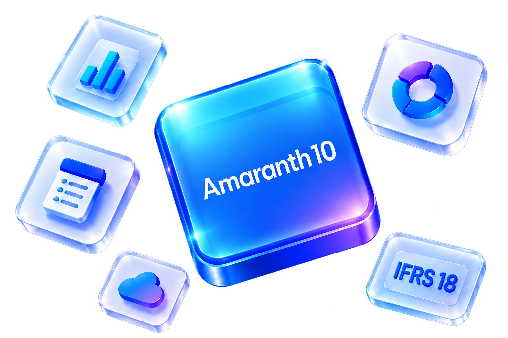
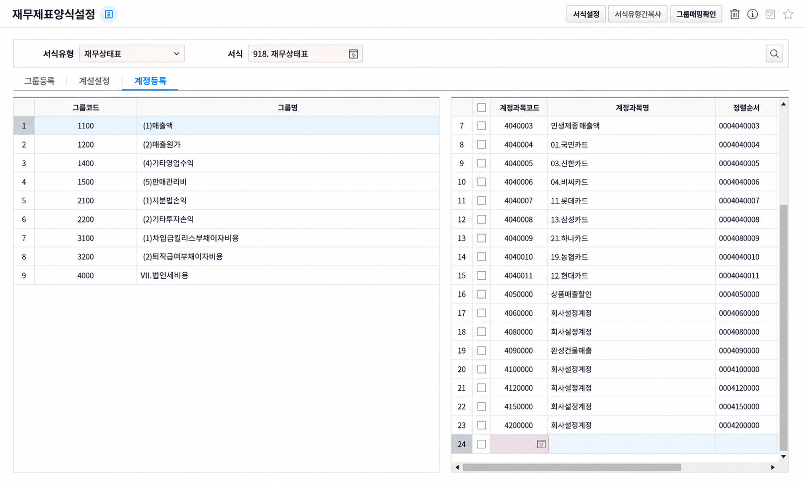
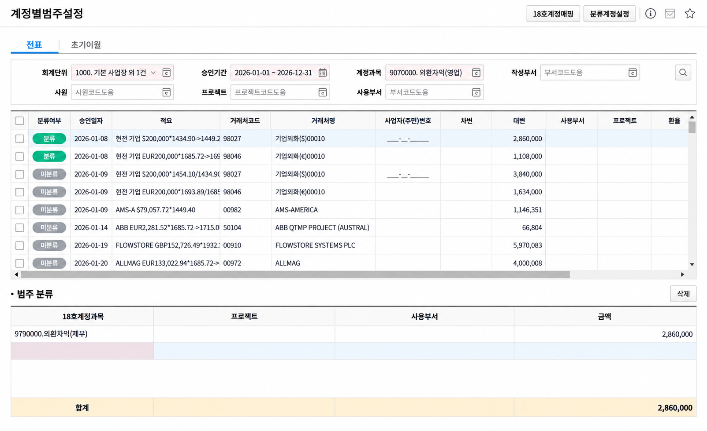
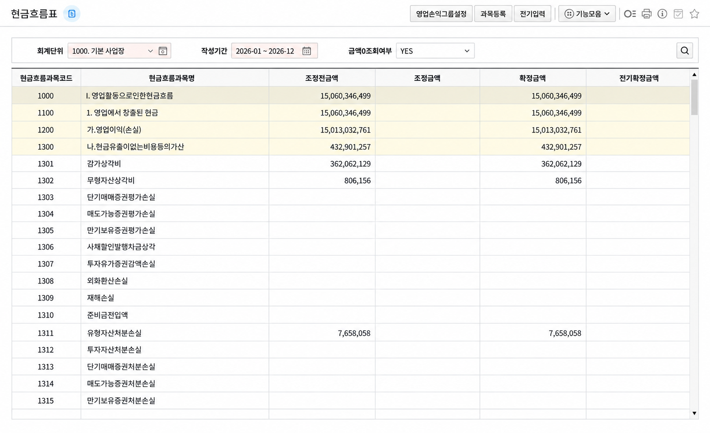

기존 전표는 그대로
마감된 전표를 직접 수정하지 않고 IFRS18 계정과목으로 분류해 이원화 관리합니다.

Product & Service
새로운 기준의 시작,
복잡한 전환을 간편하게
계정과목 재분류부터 재무제표 작성까지.
Amaranth 10이 IFRS18 전환 업무를 하나의 흐름으로 연결합니다.
마감된 전표를 직접 수정하지 않고 IFRS18 계정과목으로 분류해 이원화 관리합니다.

투자·재무 계정을 지정하고 건별 또는 일괄 매핑으로 반복 업무를 줄입니다.

기본 서식을 생성한 뒤 회사에 맞게 계산식과 계정 연결을 조정합니다.
IFRS18은 재무제표의 표시와 공시 기준을 개편합니다.
영업·투자·재무 범주와 정의된 중간합계로 기업의 성과를 더 명확하게 보여줍니다.
영업손익과 재무 및 법인세차감전손익 등 중간합계를 중심으로 손익 구조를 파악합니다.
영업활동 간접법의 출발점이 영업손익으로 바뀌며 재무성과표와 연결됩니다.
기본 서식을 생성하고 계정과목을 연결합니다. 비교기간 전표와 초기이월 자료의 범주를 지정합니다.
설정한 양식과 분류 자료를 기반으로 재무제표를 조회하고 비교 자료를 검토합니다.
합계잔액시산표, 재무상태표, 재무성과표의 기본 서식을 제공합니다. 영업·투자·재무 범주에 따라 계산식과 계정과목 연결을 설정해 회사에 맞는 양식으로 구성하세요.

과거 전표와 초기이월 자료를 IFRS18 계정 체계로 재분류합니다. 건별 분할과 일괄 매핑을 지원하며, 원천 전표의 관리항목은 유지됩니다.

영업활동 현금흐름의 간접법 계산은 영업손익에서 시작합니다. 재무성과표의 영업손익을 연결하고, 집계에 사용할 양식과 그룹을 설정할 수 있습니다.

국제회계기준위원회가 새로운 표시·공시 기준을 발표했습니다.
적용 시점에 앞서 재무제표 양식과 비교기간의 계정 분류를 점검하세요.
IFRS18은 해당 날짜 이후 시작하는 연차 보고기간부터 적용되며 조기 적용이 허용됩니다.
서비스 소개와 실제 설정 방법을 확인하세요.
우리 회사에 맞는 도입 범위와 준비 과정을 안내해 드립니다.
도입 상담 신청{kind=link}
{kind=link}
{kind=link}